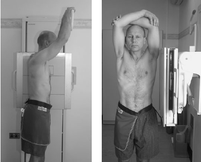

Chest(Lateral)
Centering point:Directed to the mid coronal plane at the level of T7
Perpendicular to the cassette

Cassette Size:35cm x 43cm (14 x 17 ins)
Potrait
Exposure Factors:75kVp on
32MaS
FFD:180cm
Bucky/Grid:Moving or Stationary Grid
Filter:No
Collimation:Centre: The mid coronal plane at the level of T7
Shutter A: Open to include the skin margins anteriorly and posteriorly
Shutter B: Open to include lung apices superiorly (this is at the C7 level) and to include the diaphragm inferiorly
Pathologies:Pathology posterior to the heart, great vessels and sternum,
Position of patient and cassette
- Patient erect, standing or seated, their left side touching the bucky
- Ensure the midsaggital plane is parallel to the IR, that is, the patient does not lean towards the IR
- Ensure the mid coronal plane is perpendicular to the IR, to avoid rotation of the thorax
- To prevent the humeri from superimposing over the lung fields either;
raise the arms above the patient's head,getting them to grasp the opposite elbow with each hand, or
have the patient place their hands on their head, with their elbows pointing forward, or
use the purpose built support arm that attaches to the bucky being used and have the patient hold to the bar
- Ensure that the chin is up away from the patient's chest
Critique:
- Positioning
- The sternum is shown in profile the costophrenic angles are included
- the intervertebral foramina are open
-
the left and right anterior ribs are superimposed on each other
-
the posterior ribs are superimposed on each other
-
the bones and soft tissue of the arms are not superimposed over the lung fields
-
The tibiotalar joint is open and at the centre of collimation
-
Area Covered
Lung fields, apices, costophrenic angles are shown
-
Collimation
- Centre: The mid coronal plane at the level of T7
- Shutter A: Open to include the skin margins anteriorly and posteriorly
-
Shutter B: Open to include lung apices superiorly (this is at the C7 level) and to include the diaphragm inferiorly
-
Exposure
Sufficient contrast and density to show lung markings, the ribs through the heart , and sharp outlines of the hemi diaphragms